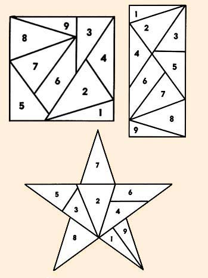
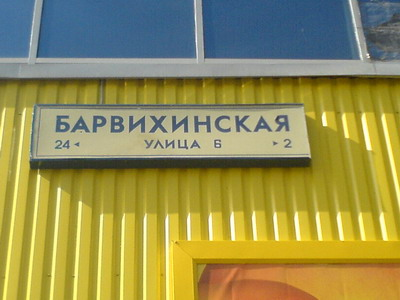
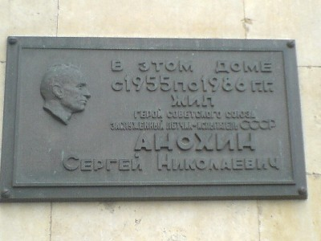
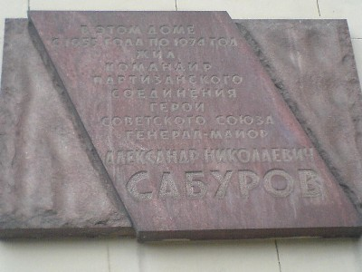

Игра №31
Тип игры: Закрытая
Описание: 1
Принадлежности: 1
| Место | Команда | Уровней пройдено | Время уровней | Всего | |
|---|---|---|---|---|---|
| Активного | Штрафы | ||||
| 1 | НЕЗВЁЗДЫ | 10 | 06:54:41 | 0 | 06:54:41 |
| 2 | dirty | 10 | 07:21:04 | 0 | 07:21:04 |
| 3 | StalkerS | 10 | 07:42:16 | 0 | 07:42:16 |
| 4 | котики | 10 | 07:49:23 | 0 | 07:49:23 |
| 5 | Йокодзуны | 10 | 08:19:53 | 0 | 08:19:53 |
| 6 | SpeedForce | 10 | 08:44:10 | 0 | 08:44:10 |
| 7 | G.O.P. Style | 10 | 08:45:05 | 0 | 08:45:05 |
| 8 | ЕКХ | 10 | 09:54:07 | 60 | 10:54:07 |
| 9 | Ктоздесь! | 9 | 09:52:53 | 60 | 10:52:53 |
| 10 | InlineGroup | 9 | 10:31:01 | 60 | 11:31:01 |
| 1 | 2 | 3 | 4 | 5 | 6 | 7 | 8 | 9 | 10 | ||
| 1 | Ктоздесь! 20:12:52 | StalkerS 21:03:12 | StalkerS 21:27:37 | НЕЗВЁЗДЫ 22:31:31 | НЕЗВЁЗДЫ 23:47:33 | НЕЗВЁЗДЫ 00:13:20 | dirty 01:25:33 | НЕЗВЁЗДЫ 01:56:36 | НЕЗВЁЗДЫ 02:44:11 | НЕЗВЁЗДЫ 02:54:41 | 1 |
| 2 | SpeedForce 20:13:12 | котики 21:06:57 | SpeedForce 21:55:35 | StalkerS 22:43:41 | StalkerS 23:48:34 | StalkerS 00:17:27 | StalkerS 01:33:42 | dirty 01:57:52 | dirty 03:03:34 | dirty 03:21:04 | 2 |
| 3 | InlineGroup 20:20:47 | SpeedForce 21:10:18 | НЕЗВЁЗДЫ 21:56:35 | котики 22:57:35 | котики 23:49:33 | котики 00:28:01 | котики 01:33:43 | котики 02:00:18 | StalkerS 03:30:30 | StalkerS 03:42:16 | 3 |
| 4 | StalkerS 20:22:11 | НЕЗВЁЗДЫ 21:18:28 | котики 22:05:02 | SpeedForce 23:11:19 | Йокодзуны 00:10:41 | Йокодзуны 00:39:05 | НЕЗВЁЗДЫ 01:38:26 | StalkerS 02:08:21 | котики 03:31:22 | котики 03:49:23 | 4 |
| 5 | dirty 20:23:14 | Ктоздесь! 21:20:31 | ЕКХ 22:23:24 | Йокодзуны 23:14:25 | dirty 00:16:44 | dirty 00:57:08 | Йокодзуны 02:12:09 | Йокодзуны 02:52:56 | Йокодзуны 03:56:17 | Йокодзуны 04:19:53 | 5 |
| 6 | котики 20:24:34 | Йокодзуны 21:20:34 | Ктоздесь! 22:29:47 | dirty 23:34:26 | SpeedForce 00:36:15 | SpeedForce 01:18:14 | SpeedForce 02:52:26 | SpeedForce 03:33:13 | SpeedForce 04:24:20 | SpeedForce 04:44:10 | 6 |
| 7 | G.O.P. Style 20:44:12 | ЕКХ 21:21:34 | dirty 22:45:59 | Ктоздесь! 23:36:55 | Ктоздесь! 01:04:47 | Ктоздесь! 02:05:29 | ЕКХ 03:05:51 | ЕКХ 03:43:13 | G.O.P. Style 04:35:05 | G.O.P. Style 04:45:05 | 7 |
| 8 | Йокодзуны 20:49:46 | dirty 21:22:44 | Йокодзуны 22:46:23 | ЕКХ 23:39:26 | ЕКХ 01:21:20 | G.O.P. Style 02:22:37 | Ктоздесь! 03:11:50 | Ктоздесь! 03:52:43 | ЕКХ 05:43:24 timeout. 60 мин. | ЕКХ 05:54:07 | 8 |
| 9 | ЕКХ 20:52:31 | G.O.P. Style 21:29:06 | G.O.P. Style 22:46:50 | G.O.P. Style 23:42:07 | G.O.P. Style 01:33:51 | InlineGroup 02:31:09 | InlineGroup 03:29:20 | G.O.P. Style 04:26:29 | Ктоздесь! 05:52:53 timeout. 60 мин. | 9 | |
| 10 | НЕЗВЁЗДЫ 21:02:35 | InlineGroup 21:47:25 | InlineGroup 23:04:19 | InlineGroup 00:40:27 | InlineGroup 01:40:55 | ЕКХ 02:33:57 | G.O.P. Style 03:34:54 | InlineGroup 04:30:34 | InlineGroup 06:31:01 timeout. 60 мин. | 10 | |
| 1 | 2 | 3 | 4 | 5 | 6 | 7 | 8 | 9 | 10 |
Уровень 1.
| № | Команда | Старт | Завершение | Штраф | Продолжительность | Бонусы |
|---|---|---|---|---|---|---|
| 1 | Ктоздесь! | 20:00:07 | 20:12:52 | 12:45 | ||
| 2 | SpeedForce | 20:00:07 | 20:13:12 | 13:05 | ||
| 3 | InlineGroup | 20:00:11 | 20:20:47 | 20:36 | ||
| 4 | StalkerS | 20:00:07 | 20:22:11 | 22:04 | ||
| 5 | dirty | 20:00:08 | 20:23:14 | 23:06 | ||
| 6 | котики | 20:00:07 | 20:24:34 | 24:27 | ||
| 7 | G.O.P. Style | 20:00:12 | 20:44:12 | 44:00 | ||
| 8 | Йокодзуны | 20:00:08 | 20:49:46 | 49:38 | ||
| 9 | ЕКХ | 20:00:16 | 20:52:31 | 52:15 | ||
| 10 | НЕЗВЁЗДЫ | 20:00:11 | 21:02:35 | 62:24 |
Задание Полевое :
Весной по статистике происходит наибольшее количество самоубийств среди молодежи. Кто-то это делает из-за безответной любви, кто-то из-за неудачной сессии. СХватчики не относятся ни к одной ни ко второй категории. Мы с вами попросим агента «убить» нас и если получится, то вам дадут ключ. Выстрел должен быть уверенным, в голову. Агент будет припираться и его надо будет уговорить сделать вам выстрел в ЛИЦО. Агента можно найти на бульваре, недалеко от памятника великому русскому (совесткому) поэту, который по одной из версий, закончил жизнь самоубийством.

Уровень 2.
| № | Команда | Старт | Завершение | Штраф | Продолжительность | Бонусы |
|---|---|---|---|---|---|---|
| 1 | НЕЗВЁЗДЫ | 21:02:35 | 21:18:28 | 15:53 | ||
| 2 | ЕКХ | 20:52:31 | 21:21:34 | 29:03 | ||
| 3 | Йокодзуны | 20:49:46 | 21:20:34 | 30:48 | ||
| 4 | StalkerS | 20:22:11 | 21:03:12 | 41:01 | ||
| 5 | котики | 20:24:34 | 21:06:57 | 42:23 | ||
| 6 | G.O.P. Style | 20:44:12 | 21:29:06 | 44:54 | ||
| 7 | SpeedForce | 20:13:12 | 21:10:18 | 57:06 | ||
| 8 | dirty | 20:23:14 | 21:22:44 | 59:30 | ||
| 9 | Ктоздесь! | 20:12:52 | 21:20:31 | 67:39 | ||
| 10 | InlineGroup | 20:20:47 | 21:47:25 | 86:38 |
Задание Полевое :
На уровне будет два ключа:
Лето все ближе, девушки раздеваются не по дням, а по часам, тем самым увеличивая количество аварий. Поэтому вам необходимо быть осторожным на этом уровне и не отвлекаться. В данном районе ул. Чертановская вы сможете найти AUDI. Ключ будет её номер (включая номер региона). Ауди может, как стоять вдоль дороги в указанной области, так и двигаться на небольшой скорости.
Второй ключ вы найдете в месте (фото): на ближайшей табличке строительных работ от «Крошки картошки». Ключ - контактный телефон.


СХ + ключ 1 + СХ + ключ 2
Ауди А6, цвет темно синий. Машина грязная.
Уровень 3.
| № | Команда | Старт | Завершение | Штраф | Продолжительность | Бонусы |
|---|---|---|---|---|---|---|
| 1 | StalkerS | 21:03:12 | 21:27:37 | 24:25 | ||
| 2 | НЕЗВЁЗДЫ | 21:18:28 | 21:56:35 | 38:07 | ||
| 3 | SpeedForce | 21:10:18 | 21:55:35 | 45:17 | ||
| 4 | котики | 21:06:57 | 22:05:02 | 58:05 | ||
| 5 | ЕКХ | 21:21:34 | 22:23:24 | 61:50 | ||
| 6 | Ктоздесь! | 21:20:31 | 22:29:47 | 69:16 | ||
| 7 | InlineGroup | 21:47:25 | 23:04:19 | 76:54 | ||
| 8 | G.O.P. Style | 21:29:06 | 22:46:50 | 77:44 | ||
| 9 | dirty | 21:22:44 | 22:45:59 | 83:15 | ||
| 10 | Йокодзуны | 21:20:34 | 22:46:23 | 85:49 |
Задание Полевое :
Езжайте в район метро Коньково. Когда будете на месте, звоните 8 916 959 9739


Задание Координаторское :
Именно это «чувство» в этом «времени года» сыграло не одну роль.
Формат ответа : сх+имя+фамилия
Уровень 4.
| № | Команда | Старт | Завершение | Штраф | Продолжительность | Бонусы |
|---|---|---|---|---|---|---|
| 1 | Йокодзуны | 22:46:23 | 23:14:25 | 28:02 | ||
| 2 | НЕЗВЁЗДЫ | 21:56:35 | 22:31:31 | 34:56 | ||
| 3 | dirty | 22:45:59 | 23:34:26 | 48:27 | ||
| 4 | котики | 22:05:02 | 22:57:35 | 52:33 | ||
| 5 | G.O.P. Style | 22:46:50 | 23:42:07 | 55:17 | ||
| 6 | Ктоздесь! | 22:29:47 | 23:36:55 | 67:08 | ||
| 7 | SpeedForce | 21:55:35 | 23:11:19 | 75:44 | ||
| 8 | ЕКХ | 22:23:24 | 23:39:26 | 76:02 | ||
| 9 | StalkerS | 21:27:37 | 22:43:41 | 76:04 | ||
| 10 | InlineGroup | 23:04:19 | 00:40:27 | 96:08 |
Задание Полевое :
На уровне 2 ключа.
Первый ключ вы получите из листа, который полевые получили на предыдущем задании.
Проходит пора, наибольшего напряжения для нашей сердечной мышцы. Весной мы влюбляемся, мы бегаем и ходим на фитнес/в тренажерку, что бы подтянуть форму к пляжному сезону. Но многие ли из нас помнят человека, фамилия которого «произошла» именно от «нагружаемого» органа. На ограде, на которую смотрит его памятник вы легко сможете найти 2 черных таблички. Последнее слово на одной из них и есть второй ключ.
Формат ответа: первый ключ + сх + второй(слово из таблички)
Задание Координаторское :
Дороги и ворота; вход и выход; хаос – 1
(Имя1)
Очищение и праздник; чистота; свет; сияния – 2 (Имя2)
Война – 3 (Имя3)
? – 4 (Имя4=ключ)
Вам необходимо понять закономерность и угадать имя, связанное с 4-ой строчкой.
Фотрмат ответа: сх + имя.
Уровень 5.
| № | Команда | Старт | Завершение | Штраф | Продолжительность | Бонусы |
|---|---|---|---|---|---|---|
| 1 | dirty | 23:34:26 | 00:16:44 | 42:18 | ||
| 2 | котики | 22:57:35 | 23:49:33 | 51:58 | ||
| 3 | Йокодзуны | 23:14:25 | 00:10:41 | 56:16 | ||
| 4 | InlineGroup | 00:40:27 | 01:40:55 | 60:28 | ||
| 5 | StalkerS | 22:43:41 | 23:48:34 | 64:53 | ||
| 6 | НЕЗВЁЗДЫ | 22:31:31 | 23:47:33 | 76:02 | ||
| 7 | SpeedForce | 23:11:19 | 00:36:15 | 84:56 | ||
| 8 | Ктоздесь! | 23:36:55 | 01:04:47 | 87:52 | ||
| 9 | ЕКХ | 23:39:26 | 01:21:20 | 101:54 | ||
| 10 | G.O.P. Style | 23:42:07 | 01:33:51 | 111:44 |
Задание Полевое :
ВЙM/МЕИИРНЕДТМЙБНАТOСЕОКМААСИЕУТЫАМИSXСЛООФ*ТТЛ*АТ***CKТОВ*ИТЬЕЕВ.ЬБННO3АГ.СЮВ.,Ф***УЕТW2,О*Д*Е**ОКФРМОТ..*ВВЕИРКЗНООААБРRMГ*АЛ*СОВУНТСГХ:UPДИМАПКГО*ТОПЕО//3Е**ТРУДНУА*Е!Д/G**РНЬИЮАИККДЧ!ИWAОУАЕ*В**ТАТОА!МWMКЧЗОФЕДПЕЗАЛТ!ОWEОАВБОЗОО*АХЖА!*./ЛТЕХТТМДПН*НН!НC3О*ДООИ*ЪОНСАА!АX1*ГЧДГ*ШЕ*ОА**!
Идеальный квадрат ЦЕЗАРЯ
Все знаки препинания принимаются за отдельный знак
* принимать за пробел
Уровень 6.
| № | Команда | Старт | Завершение | Штраф | Продолжительность | Бонусы |
|---|---|---|---|---|---|---|
| 1 | НЕЗВЁЗДЫ | 23:47:33 | 00:13:20 | 25:47 | ||
| 2 | Йокодзуны | 00:10:41 | 00:39:05 | 28:24 | ||
| 3 | StalkerS | 23:48:34 | 00:17:27 | 28:53 | ||
| 4 | котики | 23:49:33 | 00:28:01 | 38:28 | ||
| 5 | dirty | 00:16:44 | 00:57:08 | 40:24 | ||
| 6 | SpeedForce | 00:36:15 | 01:18:14 | 41:59 | ||
| 7 | G.O.P. Style | 01:33:51 | 02:22:37 | 48:46 | ||
| 8 | InlineGroup | 01:40:55 | 02:31:09 | 50:14 | ||
| 9 | Ктоздесь! | 01:04:47 | 02:05:29 | 60:42 | ||
| 10 | ЕКХ | 01:21:20 | 02:33:57 | 72:37 |
Задание Полевое :
Езжайте по улице Заречье от улицы Совхозная. Как только вы пересечете линию высоковольтных передач, сверните налево и ищите место, где вы сможете использовать сапоги или даже наконец открыть сезон «купания».
Задание Координаторское :
Выучили азбуку Морзе? Точно? Проверим…
Формат ответа сх + два последних слова.
Уровень 7.
| № | Команда | Старт | Завершение | Штраф | Продолжительность | Бонусы |
|---|---|---|---|---|---|---|
| 1 | dirty | 00:57:08 | 01:25:33 | 28:25 | ||
| 2 | ЕКХ | 02:33:57 | 03:05:51 | 31:54 | ||
| 3 | InlineGroup | 02:31:09 | 03:29:20 | 58:11 | ||
| 4 | котики | 00:28:01 | 01:33:43 | 65:42 | ||
| 5 | Ктоздесь! | 02:05:29 | 03:11:50 | 66:21 | ||
| 6 | G.O.P. Style | 02:22:37 | 03:34:54 | 72:17 | ||
| 7 | StalkerS | 00:17:27 | 01:33:42 | 76:15 | ||
| 8 | НЕЗВЁЗДЫ | 00:13:20 | 01:38:26 | 85:06 | ||
| 9 | Йокодзуны | 00:39:05 | 02:12:09 | 93:04 | ||
| 10 | SpeedForce | 01:18:14 | 02:52:26 | 94:12 |
Задание Полевое :
Ключ находится на столбиках между «несуществующим материком» и шоссе. Название шоссе вы узнаете из названия города, которому совсем недавно (в конце весны) исполнилось 775 лет.

Задание Координаторское :
Этот тип рыб, который совершает миграцию море-река-море, можно поделить на 2 вида (расы):
1.Те которые зимуют в речке (т.е. мигрируют из моря в реку для "зимовки") прежде чем пойти на нерест, т.е. входят в реку весной, а нерестятся осенью.
2. Другие, которые успевают все это за весну и лето.
Формат ответа: сх + 1 вид + 2 вид.
Уровень 8.
| № | Команда | Старт | Завершение | Штраф | Продолжительность | Бонусы |
|---|---|---|---|---|---|---|
| 1 | НЕЗВЁЗДЫ | 01:38:26 | 01:56:36 | 18:10 | ||
| 2 | котики | 01:33:43 | 02:00:18 | 26:35 | ||
| 3 | dirty | 01:25:33 | 01:57:52 | 32:19 | ||
| 4 | StalkerS | 01:33:42 | 02:08:21 | 34:39 | ||
| 5 | ЕКХ | 03:05:51 | 03:43:13 | 37:22 | ||
| 6 | SpeedForce | 02:52:26 | 03:33:13 | 40:47 | ||
| 7 | Йокодзуны | 02:12:09 | 02:52:56 | 40:47 | ||
| 8 | Ктоздесь! | 03:11:50 | 03:52:43 | 40:53 | ||
| 9 | G.O.P. Style | 03:34:54 | 04:26:29 | 51:35 | ||
| 10 | InlineGroup | 03:29:20 | 04:30:34 | 61:14 |
Задание Полевое :
Ищите ключ на "ракушках" перед зданием, которое вы найдете по фотографиям. Ключ написан на гаражах с противоположной от здания стороны. (Не пугайте местных жителей).




Задание Координаторское :
Играйте.
Вам необходимо прислать на e-mail doom@cxmoscow.ru скриншот 11 уровня (проходить его не нужно) и сообщить об этом по тел. 741-89-26.
Уровень 9.
| № | Команда | Старт | Завершение | Штраф | Продолжительность | Бонусы |
|---|---|---|---|---|---|---|
| 1 | G.O.P. Style | 04:26:29 | 04:35:05 | 08:36 | ||
| 2 | НЕЗВЁЗДЫ | 01:56:36 | 02:44:11 | 47:35 | ||
| 3 | SpeedForce | 03:33:13 | 04:24:20 | 51:07 | ||
| 4 | Йокодзуны | 02:52:56 | 03:56:17 | 63:21 | ||
| 5 | dirty | 01:57:52 | 03:03:34 | 65:42 | ||
| 6 | StalkerS | 02:08:21 | 03:30:30 | 82:09 | ||
| 7 | котики | 02:00:18 | 03:31:22 | 91:04 | ||
| 8 | Ктоздесь! | 03:52:43 | 05:52:53 | timeout 60 | 180:10 | |
| 9 | ЕКХ | 03:43:13 | 05:43:24 | timeout 60 | 180:11 | |
| 10 | InlineGroup | 04:30:34 | 06:31:01 | timeout 60 | 180:27 |
Задание Полевое :
Что бы поднять моральный дух промокшим сХватчикам, можете прочесть им следующее:
Все громче, громче солнышко стучится к нам в стекло,
Я радуюсь лучам его - в душе светлым-светло…
Ведь нежно улыбается, давно скользнувши в сны,
Любимая, красавица - принцесса фей весны.
А еще лучше попросите их спасти принцессу (найти ключ) из крепости, которая находится на улице, название содержит одну великую реку. Недалеко от этой улицы вы найдете еще несколько, связанных с другой рекой…
НАСТОЯЩИЙ ключ вам «поможет» найти Milla Jovovich.
Уровень 10.
| № | Команда | Старт | Завершение | Штраф | Продолжительность | Бонусы |
|---|---|---|---|---|---|---|
| 1 | G.O.P. Style | 04:35:05 | 04:45:05 | 10:00 | ||
| 2 | НЕЗВЁЗДЫ | 02:44:11 | 02:54:41 | 10:30 | ||
| 3 | ЕКХ | 05:43:24 | 05:54:07 | 10:43 | ||
| 4 | StalkerS | 03:30:30 | 03:42:16 | 11:46 | ||
| 5 | dirty | 03:03:34 | 03:21:04 | 17:30 | ||
| 6 | котики | 03:31:22 | 03:49:23 | 18:01 | ||
| 7 | SpeedForce | 04:24:20 | 04:44:10 | 19:50 | ||
| 8 | Йокодзуны | 03:56:17 | 04:19:53 | 23:36 |
Задание Полевое :
Жемчуговая алея.
Приезжайте туда. На месте позвоните по 8 916 959 9739 или 8 903 003 3325.
С собой иметь инстременты для снятия колеса на машине. (Домкрат и болонный ключ)
На этом уровне подсказок не будет.